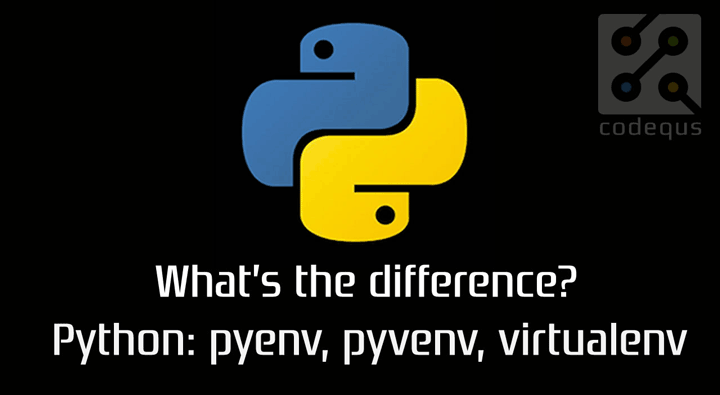

纸上得来终觉浅，绝知此事要躬行。

1. pyenv
强烈建议使用相关插件，如果你只是用
pyenv的话，那么它就只是一个Python的版本管理工具，还需要配合其他的工具才能完成我们日常需要的开发环境的搭建。与其配合其他工具，不如直接使用自带的插件，更加灵活的工作。
- [1] pyenv 的安装
- 推荐使用
pyenv-installer安装，会将相关插件一并安装
- 推荐使用
# 安装git工具
[root@localhost ~]# yum install -y git
# 安装编译工具
[root@localhost ~]# yum install -y readline readline-devel readline-static openssl openssl-devel openssl-static sqlite-devel bzip2-devel bzip2-libs
# 安装pyenv工具
[root@localhost ~]# curl -L https://raw.githubusercontent.com/yyuu/pyenv-installer/master/bin/pyenv-installer | bash
- [2] pyenv 的配置
- 使用
~/.bash_profile可以应用在所有用户 - 如果只是个人使用，可以定义在
.bashrc中
- 使用
[root@localhost ~]# vim ~/.bashrc
export PATH="~/.pyenv/bin:$PATH"
eval "$(pyenv init -)"
eval "$(pyenv virtualenv-init -)"
- [3] 加速安装 Python 版本
- 因为国内网络原因，导致安装
Python版本超级慢
- 因为国内网络原因，导致安装
# 土豪配置
购买`VPN`
# 屌丝配置
1.事先下载想要安装的Python到本地
2.如果本地没有相关目录，创建`.pyenv/cache`目录
3.将Python版本的格式改为`.tar.xz`并放到`.pyenv/cache`目录
4.指定`pyenv install`安装，即可
5.如果发现安装还是走的官网，退出当前shell之后，再重试
- [4] 生产环境部署
- 配置在
/etc/profile.d中，所有用户都可以使用
- 配置在
# 设置pyenv的root目录位置
[root@localhost ~]# export PYENV_ROOT=/opt/pyenv
# 自动化安装pyenv
[root@localhost ~]# curl -L https://raw.githubusercontent.com/yyuu/pyenv-installer/master/bin/pyenv-installer | bash
# 配置对用户可以使用生效
[root@localhost ~]# vim /etc/profile.d/pyenv.sh
export PATH="~/.pyenv/bin:$PATH"
eval "$(pyenv init -)"
eval "$(pyenv virtualenv-init -)"
- [5] 常用插件
- 再次说一下，不使用插件就相当于没用过这个工具
$ ~/.pyenv/plugins » ll
total 0
drwxr-xr-x 11 Escape staff 352B 9 10 10:03 pyenv-doctor
drwxr-xr-x 7 Escape staff 224B 9 10 01:19 pyenv-pip-migrate
drwxr-xr-x 9 Escape staff 288B 9 10 01:19 pyenv-update
drwxr-xr-x 13 Escape staff 416B 9 10 01:15 pyenv-virtualenv
drwxr-xr-x 8 Escape staff 256B 9 10 01:19 pyenv-which-ext
- [6] 常用命令
- 常用的命令，需要熟记才能灵活使用
$ pyenv
pyenv 1.2.15-39-g18fe640d
Usage: pyenv <command> [<args>]
Some useful pyenv commands are:
--version Display the version of pyenv
activate Activate virtual environment
commands List all available pyenv commands
deactivate Deactivate virtual environment
doctor Verify pyenv installation and development tools to build pythons.
exec Run an executable with the selected Python version
global Set or show the global Python version(s)
help Display help for a command
hooks List hook scripts for a given pyenv command
init Configure the shell environment for pyenv
install Install a Python version using python-build
local Set or show the local application-specific Python version(s)
prefix Display prefix for a Python version
rehash Rehash pyenv shims (run this after installing executables)
root Display the root directory where versions and shims are kept
shell Set or show the shell-specific Python version
shims List existing pyenv shims
uninstall Uninstall a specific Python version
version Show the current Python version(s) and its origin
version-file Detect the file that sets the current pyenv version
version-name Show the current Python version
version-origin Explain how the current Python version is set
versions List all Python versions available to pyenv
virtualenv Create a Python virtualenv using the pyenv-virtualenv plugin
virtualenv-delete Uninstall a specific Python virtualenv
virtualenv-init Configure the shell environment for pyenv-virtualenv
virtualenv-prefix Display real_prefix for a Python virtualenv version
virtualenvs List all Python virtualenvs found in `$PYENV_ROOT/versions/*'.
whence List all Python versions that contain the given executable
which Display the full path to an executable
See `pyenv help <command>' for information on a specific command.
For full documentation, see: https://github.com/pyenv/pyenv#readme
# 支持激活多个Python版本
$ pyenv local 2.7.10 3.6.5 3.7.0
2. pipenv
更人性化的
Python开发工作流程
[1] 功能特性
- 对锁定依赖项包进行文件哈希值校验
- 如果存在
.env文件，将自动加载.env配置 - 如果
pyenv可用，自动安装所需的Pythons版本 - 通过查找
Pipfile文件，以递归方式自动查找项目 - 如果不存在，则自动生成
Pipfile文件 - 在标准位置自动创建
virtualenv虚拟环境 - 安装/删除包时，自动将包添加/删除到
Pipfile文件 - 启用真正确定性的构建，同时轻松指定您想要的内容
[2] 安装方式
- 提供多种安装方式可供选择
# brew
$ brew install pipenv
# pip
$ pip install pipenv --user
- [3] 加速安装第三方库
- 临时修改方法
- 全局修改方法
- 设置环境变量
# 临时设置镜像源地址
$ pipenv install --pypi-mirror https://pypi.doubanio.com/simple flask
# 项目全局设置需要修改Pipfile文件中[[source]]小节(pipenv)
[[source]]
url = "https://mirrors.aliyun.com/pypi/simple/"
verify_ssl = true
name = "aliyun"
# 使用环境变量PIPENV_PYPI_MIRROR设置(可以加到.zshrc文件中)
$ export PIPENV_PYPI_MIRROR=https://mirrors.aliyun.com/pypi/simple/
- [4] 使用方法
- 包含常用的功能和方法，需要灵活使用
$ pipenv
Usage: pipenv [OPTIONS] COMMAND [ARGS]...
Options:
--where # 获取项目路径
--venv # 获取虚拟环境的路径
--py # 获取python解释器的路径
--envs # 输出当前的环境变量
--rm # 删除虚拟环境
--bare # 最小输出
--completion # 完整输出
--man # 显示联机帮助页
--support # 输出用于GitHub问题的诊断信息
--site-packages # 附带安装原Python解释器中的第三方库
--python TEXT # 指定某个Python版本作为虚拟环境的安装源
--three / --two # 使用python3/2创建虚拟环境
--clear # 清除缓存(pipenv, pip, and pip-tools)x
--pypi-mirror TEXT # 设置特定的PyPI源
-h, --help # 显示此消息并退出
Commands:
check # 检查Pipfile中提供的安全漏洞和PEP 508标记
clean # 卸载Pipfile.lock中未指定的所有包
graph # 显示当前安装的依赖关系图信息。
install # 安装虚拟环境或者第三方库并添加到Pipfile文件中
lock # 生成Pipfile.lock文件
open # 在编辑器中查看给定模块
run # 在虚拟环境中运行命令
shell # 在virtualenv中生成一个shell
sync # 安装Pipfile.lock中指定的所有包。
uninstall # 卸载一个库并将其从Pipfile文件中删除
update # 卸载当前所有的包并安装它们的最新版本
- [5] 使用示例
# 安装python版本或者第三方库
$ pipenv install
$ pipenv install --python 3
$ pipenv install --python 3.6
$ pipenv install --python 2.7.14
# 加--dev表示包括Pipfile的dev-packages中的依赖
$ pipenv install --dev
$ pipenv install pytest --dev
# 初始化一个python2版本的虚拟环境
$ pipenv --two
# 初始化一个python3版本的虚拟环境
$ pipenv --three
# 删除所有的安装包
$ pipenv uninstall --all
# 使用Python3.7创建一个新项目
$ pipenv --python 3.7
# Remove project virtualenv (inferred from current directory):
$ pipenv --rm
# 更新lock文件锁定当前环境的依赖版本
$ pipenv lock
# 创建一个包含预发行版本的锁文件
$ pipenv lock --pre
# 显示已安装依赖项的图表
$ pipenv graph
# 检查已安装的依赖项是否存在安全漏洞
$ pipenv check
# 激活当前项目的虚拟环境
$ pipenv shell
# 将本地setup.py安装到您的environment/Pipfile中
$ pipenv install -e .
# 使用低级别的pip命令
$ pipenv run pip freeze
3. autoenv
基于目录的环境，实现自动切换。
- [1] 实现方式
- 相当于进入目录之前，体检预加载相关配置
$ echo "echo 'whoa'" > project/.env
$ cd project
whoa
- [2] 安装方式
- 提供多种安装方式可供选择
# brew
$ brew install autoenv
$ echo "source $(brew --prefix autoenv)/activate.sh" >> ~/.zshrc
# pip
$ pip install autoenv --user
$ echo "source `which activate.sh`" >> ~/.zshrc
- [3] 使用方法
# 写autoenv的配置文件，需要使用绝对路径
$ touch .env
$ echo "source /home/escape/venv/bin/activate" > .env
# 重新进入该项目模块
$ cd ..
$ cd test
autoenv:
autoenv: WARNING:
autoenv: This is the first time you are about to source /home/escape/test/.env:
autoenv:
autoenv: --- (begin contents) ---------------------------------------
autoenv: source /home/escape/venv/bin/activate
autoenv:
autoenv: --- (end contents) -----------------------------------------
autoenv:
autoenv: Are you sure you want to allow this? (y/N) y
# 自动切换虚拟环境
(venv) $